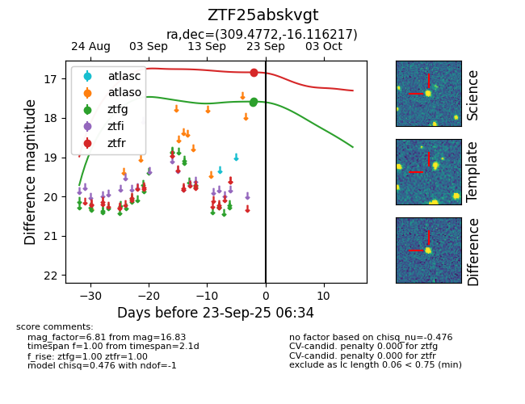
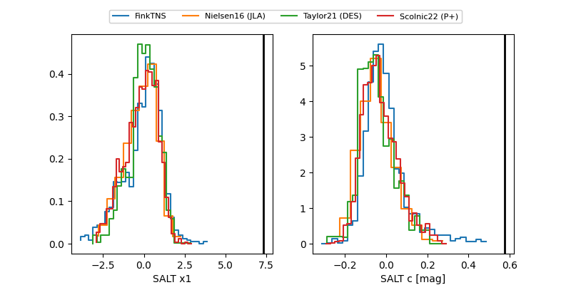

FINK: ZTF25abskvgt
Lasair: ZTF25abskvgt
ALeRCE: ZTF25abskvgt
ZTF25abskvgt (ztf,fink)
equatorial (ra, dec) = (309.4772,-16.11622)
galactic (l, b) = (29.5483,-30.64056)


last ztfg=17.57, ztfr=16.83
2 ztfg, 2 ztfr detections